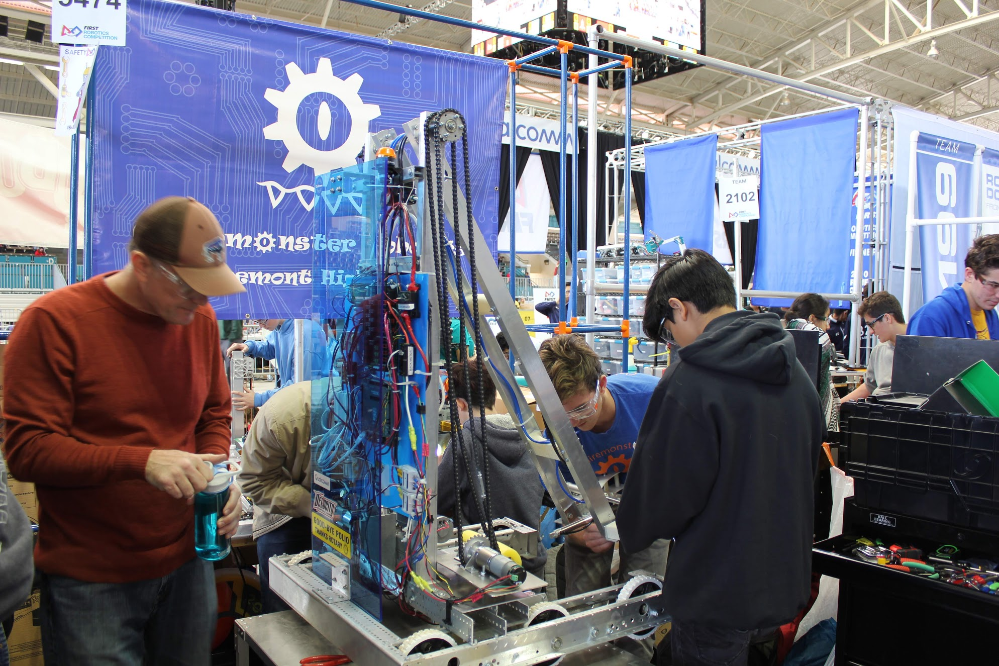

Team History
2019 - To the Stars
|  |
The Destination: Deep Space season was the fifth year for the Clairemonster Robotics team, and the first year that the team had to compete without its founding members. The team still went strong, however, and competed at the Del Mar regional as well as the Las Vegas regional. Though we didn't place as high as we may have liked, we still learned a lot about how to build our robots in the future! Our team met every day after school and on Saturdays to brainstorm, design, and build out our robot. Just after competing at the Del Mar Regional, we realized that our design was just not working. So we took an angele grinder and chopped off the arm we created and made a box out of acryllic pannels. On the positive side, though, our pneumatic hatch-grabbing system still worked! Unfortunately, our team decreased in size this year, only gaining three new freshmen and losing many seniors. However, our team still held strong and was still competitive in compeitions. In the future years, though, we plan to continue growing as a team! |
|
The 2019 FIRST Robotics Competition game, Destination: Deep Space, placed two alliances against each other to battle for points by attaching hatch pannels to cargo ships or rockets and adding cargo, or placing 13-inch balls inside of the ships. |
2018 - Shoryuken's Last Laugh

|
2018 was the Clairemonsters' fourth FRC competition season, and as it was the final year for the founders of this awesome club, it was the beginning for a new generation of freshman to learn and grow with our team for the next four years. In this season we visited two competitions for the first time ever- one at Del Mar regionals, and another in Lancaster. Every day after school, our team would get together in the old woodshop and video production room to make magic out of pool noodles and screwdrivers, and over the course of four weeks our team, consisting of 25 members were able to create a functioning robot capable of lifting power cubes up to twice the height of the robot, and maneuvering these cubes strategically around the field to accrue points. Our team experienced a ton of growth this year, with many new members, a second competition, and the beginnings of this wonderful website you’re reading now. We can only imagine how wonderful and riveting our future as Clairemonsters will be. |
|
The 2018 FIRST Robotics Competition game, Power Up, placed two alliances against each other to battle for points by securing power cubes onto a switch and a scale, as well as collecting them to activate three different game-changing powerups. |
2017 - The Croctor is Back
|
2017 was the Clairemonsters' third FRC competition season, in which our team, stronger and bigger than ever, experienced an amazing year due to the collaborative efforts of our fellow team members, mentors, and sponsors. We competed at the San Diego Regionals in Del Mar, and had a blast while we were at it. Every day after school, our team would get together in the old woodshop and video production room to make magic out of pool noodles and screwdrivers, and over the course of four weeks our team, consisting of about 15 members were able to create a functioning robot capable of collecting and placing gears, as well as accurately firing wiffle balls into the goal. This third year was a fun and exciting experience for new members, and veterans too. We can only imagine how wonderful and riveting our future as Clairemonsters will be. |
|
FIRST Steamworks, the 2017 FIRST Robotics Competition game, invites two adventure clubs from an era in which technology relied on steam power to prepare their airships for the ultimate long distance race. |
2016 - The Boctor is In
|
2016 was the Clairemonsters' second FRC competition season, and with more people that equates to more determination, teamwork, and efficiency. With the help and support of our mentors, we were able to successfully compete in the San Diego Regionals, hosted in Del Mar. Every day after school, our team would get together in the old woodshop and video production room to make magic out of pool noodles and screwdrivers, and over the course of four weeks our team, consisting of about fifteen members -- we were able to create a functioning robot capable of throwing balls, rolling over obstacles and capture defense mechanisms. Our second year was even more as amazing and exciting as our rookie year, as we doubled our robotics team size which means double the determination. We can only imagine how wonderful and riveting our future as Clairemonsters will be. |
|
Here is the 2016 FRC Challenge, FIRST Stronghold. In this challenge, teams competed against each other to shoot balls into the tower after driving through rugged terrain. The ultimate challenge was to conquer the majority of the defenses for additional points. |
2015 - Sullied Beginnings
|
2015 was the Clairemonsters' first FRC competition season, and due to determination, teamwork, and the help and support of our mentors, we were able to successfully compete in the San Diego Regionals, hosted at the Valley View Sports Arena. Every day after school, our team would get together in the old woodshop and video production room to make magic out of pool noodles and screwdrivers, and over the course of four weeks our team, consisting of nine members, was able to create a functioning robot capable of stacking totes and trash cans--the 2015 challenge. Our rookie year was so amazing and exciting, and we can only imagine how wonderful and riveting our future as Clairemonsters will be. |
|
Here is the 2015 FRC Challenge, Recycle Rush. In this challenge, teams had to work together to stack totes and trash cans upon each other, and top it off with a pool noodle as the "cherry-on-top". |